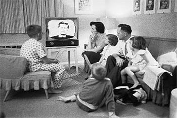
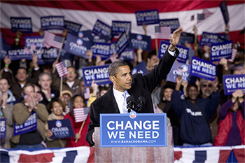
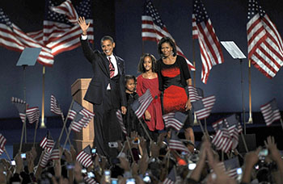

2016 will be a revolutionary time for campaign advertising. In comparison to 2012, a majority of voters now use the Internet to follow campaign news, surpassing television. Over two-thirds of Americans own a smartphone, almost double the amount in 2011, and 90% of people are within 3 feet of their phone 24 hours a day.
Along with voters’ changing media consumption, the electorate continues to shift.
Young voters aged 18-30 represent 45 million voters and millions more Latino voters will be eligible to vote than in 2012. Furthermore, the percentage of voters who identify as Independent is the highest in history.
#SwingTheVote will show you how to harness the power of video, so you can reach these digital voters and engage them with compelling, influential content. Place your campaign messaging where the voters are for most of their day: on their computers and devices!
Use online video to reach Latino, millennial, and Independent voters, who not only continue to grow in size but who also consume online video far more than the average American.
They watch more digital video but less TV than any other group (watch over an hour less TV per day).
The average Hispanic spends more than eight hours watching online video each month — over 90 minutes longer than the U.S. average.
More voters than ever identify as Independent.
Independent voters report the most mobile activity when compared to Republicans and Democrats.
The 44 million young Americans eligible to vote will double by 2020.
Millennials watch 3x as much online video as non-millennials and are 2x more likely to be focused while watching video on mobile than on TV.
In a typical day, 98% of 18-34-year-olds reported using smartphones to watch video content.
Rise of TelevisionBe ahead of the media curve as Kennedy was with TV. |
21ST CENTURY Rise of the Digital VoterUsing mobile to follow political & election news more & more |
|||||||
| 1960 | 2004 | 2012 | 2013 | 2014 | 2015 | |||
|

By 1960, 88% of American households had televisions. Kennedy knew that 74 million Americans would tune in, and he dressed for the occasion. Will you be the 21st century Kennedy or Nixon? |

21% of voters use the Internet as a primary campaign news source and 75% use TV. Pew, November 2012 |

2012 presidential candidates spend $159 million on online advertising, 7x the amount in 2008. Source: Borrell, 2015 |
34% of voters younger than 30 say they watched TV for news yesterday, down from 49% in 2006. Pew, september 2012 |
Majority of American public cites the Internet as their main source for national & political news. Source: Pew, October 2013 |

Online political advertising spending hits $271 million. Source: Reuters & The Wire, 2014 |
Digital Video viewers reaches 204 million, representing 78.6% of the total U.S. internet population. Source: eMarketer, Feb 2015 |
For the first time ever, fewer than half of all voters say that live TV is their primary source for watching video content. Source: Public Opinion Strategies & Global Strategy Group |
84% of smartphone and tablet owners use their devices while watching TV. Source: Nielsen, Feb 2014 |
Use digital for the targeting and granularity that TV currently lacks
How you present yourself, what you look like, and whether you connect directly with audiences matters.
Test creatives on every demographic and use insights to create future ads that are engaging and compelling.
With Virool’s emotional insights technology (eIQ), you can quantitatively measure how your ads make people
feel by analyzing the best indicator of emotion: facial expressions.
Use eIQ to track real-time reactions as your audience views your content and see where in the video the viewer is most engaged, excited, happy, or sad.
See what your audience was feeling at every part of your campaign ad. Test eIQ on different demographics and in different regions to determine what works best for everyone.
Hillary Clinton's long-form “Getting Started” campaign outperformed "Happy Father's Day" on engagement and happiness, and it became the 3rd most viral video ad of April, according to Unruly.
Over 300,000
Over 4.7 million
2.17 minutes
Leverage Virool's eIQ technology to gain insights for more compelling content and to target videos based on the audience it resonates with.
Use placements that are not intrusive to the viewer. Consumers look at native ads 53% more frequently than standard pre-roll.
Unlock premium mobile inventory with Virool's InLine unit. Placements on smartphones have an average completion rate of 46%.